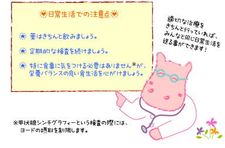

|
Lesson20 : 日常生活のこと
20-1 日常生活について
|
先天性甲状腺機能低下症（クレチン症）と診断されても、適切な治療（チラーヂンSの服用）をきちんと受けていれば、病気のないお子さんたちと全く同じ日常生活を送ることができます。逆に、普通の人と変わらない健康体であるお子さんの様子を見慣れてしまい、「治っているのでは？」「大丈夫みたい」という危険な自己判断をして、薬を飲ませることをいい加減にしてしまったり、止めさせてしまうことは良くありません。定期的な血液検査を続け、甲状腺機能検査が安定した数値（TSHは1～2mIU/L程度、FT4は基準範囲の上半分）を維持することが、育ち盛りのお子さんにとって大変重要です。 |
 |
20-2 食事について
クレチン症だからといって特に食生活に神経質になる必要はありません。しかし、チラーヂンSを服用している場合は、豆乳と一緒に飲むと吸収が悪くなるので、一緒に飲むのは控えましょう。また通常、チラーヂンSは毎日服用する薬ですので、飲み忘れを防ぐためにも、毎日同じ時間帯に飲むようにしましょう。1日1回朝食前の空腹時がおすすめですが、主治医は患者さんの状態によって判断していますので、主治医から特別な服薬指導（薬の飲み方）がある場合、その指示に従いましょう。
最近、大人で飲み忘れなどを防ぐために、寝る前の服用を勧める論文もあります。その論文によりますと、夜間にチラーヂンＳが十分吸収されるためか、TSHが低値、FT4高値という良好な結果をしめし、またTSHの日内リズムにも問題は起きなかったということです。しかし、まだ子どもでの十分なエビデンス（科学的証拠）は得られていませんので、これまで通りの１日１回朝食前の服用が標準的な方法です。
N Bolk, T J. Visser, A Kalsbeek, R T. van Domburg† and A Berghout：Effects of evening vs morning thyroxine ingestion on serum thyroid hormone profiles in hypothyroid patients. Clinical Endocrinology (2007) 66:43–48
甲状腺ホルモンの分泌は、食物中に含まれるヨード（ヨウ素）と大きく関わりがあることは、４－２「お母さんの食生活による甲状腺機能異常」のところでWolff-Chaikoff効果として説明しましたが、そういった理由から、赤ちゃんに過剰のヨードを与えたり、意識してヨードの多い食べ物を続けることは良くありません。しかし、普通の離乳食や食事から摂取されるヨードの量は問題になることはありませんので、クレチン症で特にヨードを意識した食生活を送る必要はありません。むしろ、一般的な注意として栄養バランスの良い食生活を心がけましょう。
クレチン症を詳しく調べる（病型診断）ための甲状腺シンチグラフィーという検査の際に、ヨードの摂取を制限しますが、これは甲状腺の働きを検査するためのもので、検査の時だけ必要なことです。
・・・Lesson26「ヨード制限食」参照。